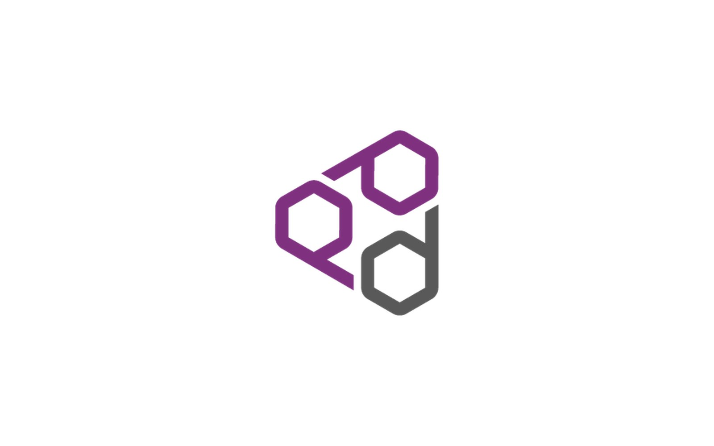

What it is
llm-d is Kubernetes-native distributed LLM inference. The public site is llm-d.ai. The catalog places the work at IBM Research, inference systems.
IBM Research
IBM Research · Inference systems
Kubernetes-native distributed LLM inference.

llm-d is Kubernetes-native distributed LLM inference. The public site is llm-d.ai. The catalog places the work at IBM Research, inference systems.
On llm-d, Guy built the KV-cache PVC Evictor, chat preprocessing, and a multimodal cache-affinity scorer.
TCAP award for leadership of the llm-d open-source project.
Leadership of the llm-d open-source project — TCAP award.